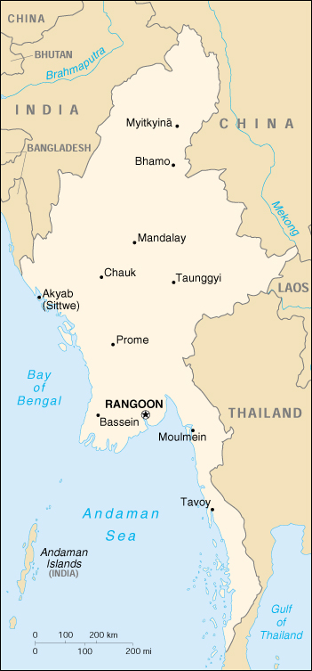

{kind=link}


| Burma |
|
|  | |
| Introduction |
Background: Despite multiparty elections in 1990 that resulted in the main opposition party winning a decisive victory, the military junta ruling the country refused to hand over power. Key opposition leader and Nobel Peace Prize recipient AUNG San Suu Kyi, under house arrest from 1989 to 1995, continues to have her activities restricted; her supporters are routinely harassed or jailed.
| Geography |
Location: Southeastern Asia, bordering the Andaman Sea and the Bay of Bengal, between Bangladesh and Thailand
Geographic coordinates: 22 00 N, 98 00 E
Map references: Southeast Asia
Area:
total:
678,500 sq km
land:
657,740 sq km
water:
20,760 sq km
Area - comparative: slightly smaller than Texas
Land boundaries:
total:
5,876 km
border countries:
Bangladesh 193 km, China 2,185 km, India 1,463 km, Laos 235 km, Thailand 1,800 km
Coastline: 1,930 km
Maritime claims:
contiguous zone:
24 nm
continental shelf:
200 nm or to the edge of the continental margin
exclusive economic zone:
200 nm
territorial sea:
12 nm
Climate: tropical monsoon; cloudy, rainy, hot, humid summers (southwest monsoon, June to September); less cloudy, scant rainfall, mild temperatures, lower humidity during winter (northeast monsoon, December to April)
Terrain: central lowlands ringed by steep, rugged highlands
Elevation extremes:
lowest point:
Andaman Sea 0 m
highest point:
Hkakabo Razi 5,881 m
Natural resources: petroleum, timber, tin, antimony, zinc, copper, tungsten, lead, coal, some marble, limestone, precious stones, natural gas, hydropower
Land use:
arable land:
15%
permanent crops:
1%
permanent pastures:
1%
forests and woodland:
49%
other:
34% (1993 est.)
Irrigated land: 10,680 sq km (1993 est.)
Natural hazards: destructive earthquakes and cyclones; flooding and landslides common during rainy season (June to September); periodic droughts
Environment - current issues: deforestation; industrial pollution of air, soil, and water; inadequate sanitation and water treatment contribute to disease
Environment - international agreements:
party to:
Biodiversity, Climate Change, Desertification, Endangered Species, Law of the Sea, Nuclear Test Ban, Ozone Layer Protection, Ship Pollution, Tropical Timber 83, Tropical Timber 94
signed, but not ratified:
none of the selected agreements
Geography - note: strategic location near major Indian Ocean shipping lanes
| People |
Population:
41,734,853
note:
estimates for this country explicitly take into account the effects of excess mortality due to AIDS; this can result in lower life expectancy, higher infant mortality and death rates, lower population and growth rates, and changes in the distribution of population by age and sex than would otherwise be expected (July 2000 est.)
Age structure:
0-14 years:
30% (male 6,341,546; female 6,086,650)
15-64 years:
65% (male 13,565,379; female 13,764,242)
65 years and over:
5% (male 885,583; female 1,091,453) (2000 est.)
Population growth rate: 0.64% (2000 est.)
Birth rate: 20.61 births/1,000 population (2000 est.)
Death rate: 12.35 deaths/1,000 population (2000 est.)
Net migration rate: -1.85 migrant(s)/1,000 population (2000 est.)
Sex ratio:
at birth:
1.06 male(s)/female
under 15 years:
1.04 male(s)/female
15-64 years:
0.99 male(s)/female
65 years and over:
0.81 male(s)/female
total population:
0.99 male(s)/female (2000 est.)
Infant mortality rate: 75.3 deaths/1,000 live births (2000 est.)
Life expectancy at birth:
total population:
54.91 years
male:
53.6 years
female:
56.29 years (2000 est.)
Total fertility rate: 2.37 children born/woman (2000 est.)
Nationality:
noun:
Burmese (singular and plural)
adjective:
Burmese
Ethnic groups: Burman 68%, Shan 9%, Karen 7%, Rakhine 4%, Chinese 3%, Mon 2%, Indian 2%, other 5%
Religions: Buddhist 89%, Christian 4% (Baptist 3%, Roman Catholic 1%), Muslim 4%, animist 1%, other 2%
Languages: Burmese, minority ethnic groups have their own languages
Literacy:
definition:
age 15 and over can read and write
total population:
83.1%
male:
88.7%
female:
77.7% (1995 est.)
note:
these are official statistics; estimates of functional literacy are likely closer to 30% (1999 est.)
| Government |
Country name:
conventional long form:
Union of Burma
conventional short form:
Burma
local long form:
Pyidaungzu Myanma Naingngandaw (translated by the US Government as Union of Myanma and by the Burmese as Union of Myanmar)
local short form:
Myanma Naingngandaw
former:
Socialist Republic of the Union of Burma
Data code: BM
Government type: military regime
Capital: Rangoon (regime refers to the capital as Yangon)
Administrative divisions: 7 divisions* (yin-mya, singular - yin) and 7 states (pyine-mya, singular - pyine); Chin State, Ayeyarwady*, Bago*, Kachin State, Kayin State, Kayah State, Magway*, Mandalay*, Mon State, Rakhine State, Sagaing*, Shan State, Tanintharyi*, Yangon*
Independence: 4 January 1948 (from UK)
National holiday: Independence Day, 4 January (1948)
Constitution: 3 January 1974 (suspended since 18 September 1988); national convention started on 9 January 1993 to draft a new constitution; chapter headings and three of 15 sections have been approved
Legal system: does not accept compulsory ICJ jurisdiction
Suffrage: 18 years of age; universal
Executive branch:
chief of state:
Prime Minister and Chairman of the State Peace and Development Council Gen. THAN SHWE (since 23 April 1992); note - the prime minister is both the chief of state and head of government
head of government:
Prime Minister and Chairman of the State Peace and Development Council Gen. THAN SHWE (since 23 April 1992); note - the prime minister is both the chief of state and head of government
cabinet:
State Peace and Development Council (SPDC); military junta, so named 15 November 1997, which initially assumed power 18 September 1988 under the name State Law and Order Restoration Council; the SPDC oversees the cabinet
elections:
none; the prime minister assumed power upon resignation of the former prime minister
Legislative branch:
unicameral People's Assembly or Pyithu Hluttaw (485 seats; members elected by popular vote to serve four-year terms)
elections:
last held 27 May 1990, but Assembly never convened
election results:
percent of vote by party - NA%; seats by party - NLD 396, NUP 10, other 79
Judicial branch: limited; remnants of the British-era legal system in place, but there is no guarantee of a fair public trial; the judiciary is not independent of the executive
Political parties and leaders: National League for Democracy or NLD [AUNG SHWE, chairman, AUNG SAN SUU KYI, general secretary]; National Unity Party or NUP (proregime) [THA KYAW]; Union Solidarity and Development Association or USDA (proregime, a social and political organization) [THAN AUNG, general secretary]; and eight minor legal parties
Political pressure groups and leaders: All Burma Student Democratic Front or ABSDF; Kachin Independence Army or KIA; Karen National Union or KNU; National Coalition Government of the Union of Burma or NCGUB [Dr. SEIN WIN] consists of individuals legitimately elected to the People's Assembly but not recognized by the military regime; the group fled to a border area and joined with insurgents in December 1990 to form a parallel government; several Shan factions; United Wa State Army or UWSA
International organization participation: AsDB, ASEAN, CCC, CP, ESCAP, FAO, G-77, IAEA, IBRD, ICAO, ICRM, IDA, IFAD, IFC, IFRCS, IMF, IMO, Intelsat (nonsignatory user), Interpol, IOC, ITU, NAM, OPCW, UN, UNCTAD, UNESCO, UNIDO, UPU, WHO, WMO, WToO, WTrO
Diplomatic representation in the US:
chief of mission:
Ambassador TIN WINN
chancery:
2300 S Street NW, Washington, DC 20008
telephone:
[1] (202) 332-9044
FAX:
[1] (202) 332-9046
consulate(s) general:
New York
Diplomatic representation from the US:
chief of mission:
Permanent Charge d'Affaires Priscilla A. CLAPP
embassy:
581 Merchant Street, Rangoon (GPO 521)
mailing address:
Box B, APO AP 96546
telephone:
[95] (1) 282055, 282182
FAX:
[95] (1) 280409
Flag description: red with a blue rectangle in the upper hoist-side corner bearing, all in white, 14 five-pointed stars encircling a cogwheel containing a stalk of rice; the 14 stars represent the 14 administrative divisions
| Economy |
Economy - overview: Burma has a mixed economy with private activity dominant in agriculture, light industry, and transport, and with substantial state-controlled activity, mainly in energy, heavy industry, and the rice trade. Government policy in the last 11 years, 1989-99, has aimed at revitalizing the economy after three decades of tight central planning. Thus, private activity has markedly increased; foreign investment has been encouraged, so far with moderate success. State enterprises remain highly inefficient and privatization efforts have stalled. Published estimates of Burma's foreign trade are greatly understated because of the volume of black-market trade. A major ongoing problem is the failure to achieve monetary and fiscal stability. Burma remains a poor Asian country and living standards for the majority have not improved over the past decade. The short-term outlook is for continued sluggish growth because of poor government planning, internal unrest, minimal foreign investment, and the large trade deficit.
GDP: purchasing power parity - $59.4 billion (1999 est.)
GDP - real growth rate: 4.6% (1999 est.)
GDP - per capita: purchasing power parity - $1,200 (1999 est.)
GDP - composition by sector:
agriculture:
59%
industry:
11%
services:
30% (1997 est.)
Population below poverty line: 23% (1997 est.)
Household income or consumption by percentage share:
lowest 10%:
NA%
highest 10%:
NA%
Inflation rate (consumer prices): 38% (1999 est.)
Labor force: 19.7 million (FY98/99 est.)
Labor force - by occupation: agriculture 65%, industry 10%, services 25% (1999 est.)
Unemployment rate: 7.1% (official FY97/98 est.)
Budget:
revenues:
$7.9 billion
expenditures:
$12.2 billion, including capital expenditures of $5.7 billion (FY96/97)
Industries: agricultural processing; textiles and footwear; wood and wood products; copper, tin, tungsten, iron; construction materials; pharmaceuticals; fertilizer
Industrial production growth rate: NA%
Electricity - production: 4.31 billion kWh (1998)
Electricity - production by source:
fossil fuel:
61.72%
hydro:
38.28%
nuclear:
0%
other:
0% (1998)
Electricity - consumption: 4.008 billion kWh (1998)
Electricity - exports: 0 kWh (1998)
Electricity - imports: 0 kWh (1998)
Agriculture - products: paddy rice, corn, oilseed, sugarcane, pulses; hardwood
Exports: $1.2 billion (1998)
Exports - commodities: pulses and beans, prawns, fish, rice; teak, opiates
Exports - partners: India 13%, China 11%, Singapore 10%, Thailand 8% (1998)
Imports: $2.5 billion (1998)
Imports - commodities: machinery, transport equipment, construction materials, food products
Imports - partners: Singapore 31%, Japan 12%, Thailand 12%, China 9%, Malaysia 8% (1998)
Debt - external: $5.9 billion (FY98/99 est.)
Economic aid - recipient: $99 million (FY98/99)
Currency: 1 kyat (K) = 100 pyas
Exchange rates: kyats (K) per US$1 - official rate - 6.2665 (January 2000), 6.2858 (1999), 6.3432 (1998), 6.2418 (1997), 5.9176 (1996), 5.6670 (1995); kyats (K) per US$1 - market exchange rate - 330 (yearend 1999)
Fiscal year: 1 April - 31 March
| Communications |
Telephones - main lines in use: 158,000 (1995)
Telephones - mobile cellular: 2,007 (1995)
Telephone system:
meets minimum requirements for local and intercity service for business and government; international service is good
domestic:
NA
international:
satellite earth station - 1 Intelsat (Indian Ocean)
Radio broadcast stations: AM 2, FM 3, shortwave 3 (1998)
Radios: 4.2 million (1997)
Television broadcast stations: 2 (1998)
Televisions: 260,000 (1997)
Internet Service Providers (ISPs): 0 (1999)
| Transportation |
Railways:
total:
3,991 km
narrow gauge:
3,991 km 1.000-m gauge
Highways:
total:
28,200 km
paved:
3,440 km
unpaved:
24,760 km (1996 est.)
Waterways: 12,800 km; 3,200 km navigable by large commercial vessels
Pipelines: crude oil 1,343 km; natural gas 330 km
Ports and harbors: Bassein, Bhamo, Chauk, Mandalay, Moulmein, Myitkyina, Rangoon, Akyab (Sittwe), Tavoy
Merchant marine:
total:
40 ships (1,000 GRT or over) totaling 472,284 GRT/716,533 DWT
ships by type:
bulk 13, cargo 20, container 2, passenger/cargo 3, petroleum tanker 2 (1999 est.)
note:
a flag of convenience registry; includes ships of 2 countries: Japan owns 2 ships, US 3 (1998 est.)
Airports: 80 (1999 est.)
Airports - with paved runways:
total:
10
over 3,047 m:
2
2,438 to 3,047 m:
1
1,524 to 2,437 m:
5
914 to 1,523 m:
2 (1999 est.)
Airports - with unpaved runways:
total:
70
over 3,047 m:
2
2,438 to 3,047 m:
1
1,524 to 2,437 m:
13
914 to 1,523 m:
22
under 914 m:
32 (1999 est.)
Heliports: 1 (1999 est.)
| Military |
Military branches: Army, Navy, Air Force
Military manpower - military age: 18 years of age
Military manpower - availability:
males age 15-49:
11,865,696
females age 15-49:
11,894,661
note:
both sexes liable for military service (2000 est.)
Military manpower - fit for military service:
males age 15-49:
6,334,750
females age 15-49:
6,334,937 (2000 est.)
Military manpower - reaching military age annually:
males:
483,964
females:
468,221 (2000 est.)
Military expenditures - dollar figure: $39 million (FY97/98)
Military expenditures - percent of GDP: 2.1% (FY97/98)
| Transnational Issues |
Disputes - international: sporadic conflict with Thailand over alignment of border
Illicit drugs: world's second largest producer of illicit opium, after Afghanistan (potential production in 1999 - 1,090 metric tons, down 38% due to drought; cultivation in 1999 - 89,500 hectares, a 31% decline from 1998); surrender of drug warlord KHUN SA's Mong Tai Army in January 1996 was hailed by Rangoon as a major counternarcotics success, but lack of government will and ability to take on major narcotrafficking groups and lack of serious commitment against money laundering continues to hinder the overall antidrug effort; becoming a major source of methamphetamines for regional consumption